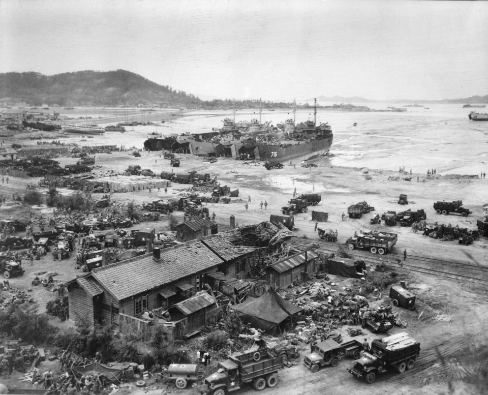
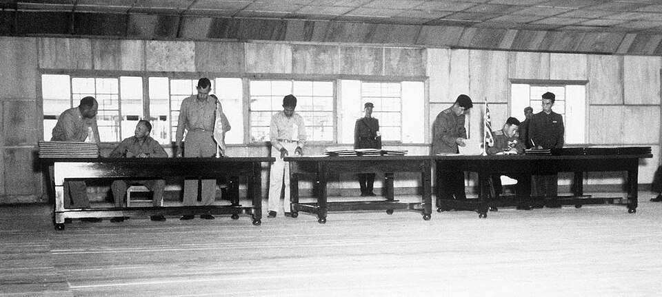

| 개헌 | 연도 | 내용 |
|---|---|---|
| 제헌헌법 | 1948 | 대통령 (국회에서 선출), 국회 임기 2년 |
| 1차() | 1952 | 6·25전쟁 중 부산정치파동을 거쳐 대통령 로 변경 |
| 2차() | 1954 | 초대 대통령에 한해 철폐 |
| 정부 | 주요 정책 |
|---|---|
| 김영삼 (문민정부) | (1993), 지방자치제 전면 실시, 역사 바로 세우기, OECD 가입(1996) → 임기 말 외환위기(1997) |
| 김대중 (국민의 정부) | IMF 위기 극복(금모으기 운동, 노사정위원회), 최초의 평화적 여야 정권 교체, , 한·칠레 FTA |
| 노무현 (참여정부) | 호주제 폐지, 추진, |